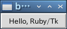
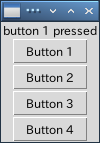
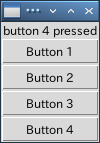
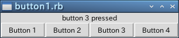
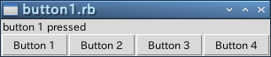
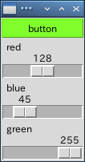
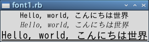
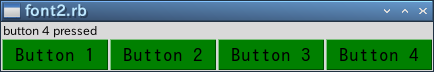

Ruby はシンプルでわかりやすいスクリプト言語です。シンプルといっても簡易言語ではありません。ハッシュ、モジュール、例外処理、オブジェクト指向など高度な機能を備えていて、大規模なソフトウェアでも開発できる汎用のプログラミング言語として、さまざまな分野で使われています。
GUI (Graphical User Interface) アプリケーションの作成もそのひとつです。GUI に対応したアプリケーションを作ることは、CUI (Character User Interface) で動作するプログラムを作るよりも相当の労力を必要とします。さらに、GUI はユーザーの使い勝手に直結しているため、プログラムの改良を頻繁に行うことがあります。このため、GUI の開発は簡単にプログラムの修正と実行が行えるスクリプト言語が適しているといわれています。
GUI 用のスクリプト言語で有名なのが Tcl/Tk です。拙作のページ Tcl/Tk GUI Programming では入門記事やミニゲーム集を公開しています。Tcl/Tk は優れた開発環境ですが、実際に使っていると Tcl 言語に不満が出てきます。Tcl はシェルスクリプトを拡張したコマンド言語、つまり簡易言語に過ぎません。簡単なアプリケーションならば、数行から数十行でプログラムを記述できますが、数百行以上のプログラムを作るのには適していません。
Tcl は好まないが Tk を愛してやまない人々が、自分の好みの言語に Tk を移植する試みが行われました。もちろん、Ruby でも Tk を使うことができます。それが Ruby/Tk です。Ubuntu 系の OS で、Ruby (ver 2.3) と Tcl/Tk (ver 8.6) がインストールされている場合、次のコマンドで Ruby/Tk を簡単にインストールすることができます。
$ sudo apt-get install ruby2.3-tcltk
本稿では、簡単なプログラムを作りながら Ruby/Tk の使い方を説明していく予定です。実行環境は Lubuntu 16.04 on VirtualBox です。とりあえず、Tcl/Tk お気楽 GUI プログラミング入門編、Tcl/Tk お気楽 GUI プログラミング応用編 と同じ例題を Ruby/Tk で作ってみようと思います。たいしたことはできませんが、よろしければお付き合いくださいませ。
GUI アプリケーションの場合、ユーザーからの入力やシステムの状態変化など、ある出来事をきっかけにプログラムが実行されます。この出来事を「イベント(event)」といい、イベントをきっかけにしてプログラムが起動されることを「イベントドリブン (イベント駆動, eventdriven)」といいます。イベントドリブン型のアプリケーションは、一般に次のようなメインルーチンを持っています。
2 から 4 を「イベントループ」と呼び、アプリケーションはユーザーからの入力などのイベントを待ちます。そして、3 の処理に対応する機能が「バインディング(binding)」です。バインディングは、ウィンドウでイベントが発生したときに、それに応じて定義したプログラムを実行します。このプログラムを「イベントハンドラ」とか「コールバック関数」と呼びます。
GUI アプリケーションとしての最低限の機能は Ruby/Tk が面倒を見てくれるので、私達はアプリケーション固有の処理をプログラミングするだけで済みます。
Ruby/Tk で GUI アプリケーションを作る場合、次のような手順が必要になります。
このほかに、必要に応じてコールバック関数を作成します。Tcl/Tk の場合、1 と 3 の処理はプログラムする必要はありませんが、Ruby/Tk では 2 と 3 の処理を自分でプログラムする必要があります。
それでは実際にプログラムを作ってみましょう。ボタンをひとつ表示します。
リスト：ボタンの表示 require 'tk' button = TkButton.new(text: "Hello, Ruby/Tk") button.pack Tk.mainloop
最初にモジュール tk をロードしてください。次に、メインウィンドウを作成しますが、Ruby/Tk では自動的に作成されるので、私たちがプログラムする必要はありません。次にボタンを作ります。Tk では GUI 用の部品のことを「ウィジェット (widget)」と呼びます。Tk にはたくさんのウィジェットが用意されていて、それをウィンドウに配置することで簡単に GUI アプリケーションを作成することができます。
Ruby/Tk の場合、ウィジェットに対応するクラスが用意されていて、名前は Tk + ウィジェット になります。ボタン (Button) を作る場合、TkButton.new() でボタンのオブジェクトを生成します。引数 text: 'Hello, Ruby/Tk' は、ボタンに表示されるテキストを指定します。name: value は :name => value と同じで、Ruby ver 1.9 から導入された表記法です。
この段階では、ボタンはまだ配置されていません。ボタンの配置はメソッド pack で行います。Tk の場合、ウィジェットの配置はジオメトリマネージャが行います。3 種類のマネージャがあって、pack はそのうちのひとつです。button.pack が実行されると、ウィンドウにボタンが配置されます。最後にメソッド mainloop() を呼び出して、イベントループを開始します。
簡単なプログラムですが、Ruby/Tk で GUI アプリケーションを作る場合の基本的な構造を表しています。あとは、イベントに対応するコールバック関数を作ります。この例題ではボタンを表示しただけですが、押したときの動作をプログラムすることができます。
 Ruby/Tk のウィンドウ
Ruby/Tk に用意されている主なウィジェットを表に示します。
| ウィジェット名 | クラス名 | 概要 |
|---|---|---|
| フレーム | TkFrame | ウィジェットを格納する枠組みを作る |
| ラベル | TkLabel | 文字列やイメージを表示する |
| メッセージ | TkMessage | 複数行の文字列を表示する |
| ボタン | TkButton | ボタンを作る |
| ラジオボタン | TkRadiobutton | ラジオボタンを作る |
| チェックボタン | TkCheckbutton | チェックボタンを作る |
| リストボックス | TkListbox | リストボックスを作る |
| スクロールバー | TkScrollbar | スクロールバーを作る |
| スケール | TkScale | スケールを作る |
| エントリー | TkEntry | 1 行の文字列の入力と編集 |
| メニュー | TkMenu | メニューを作る |
| メニューボタン | TkMenubutton | メニューボタンを作る |
| ビットマップ | TkBitmap | ビットマップを作る |
| キャンバス | TkCanvas | キャンバスを作る |
| テキスト | TkText | テキストの入力と編集 |
| ラベルフレーム | TkLabelFrame | ラベル付きフレーム |
| スピンボックス | TkSpinbox | スピンボックスを作る |
| ペインウィンドウ | TkPanedWindow | ペインウィンドウを作る |
なかにはあまり見かけないものもありますが、大部分はお馴染みのウィジェットだと思います。
ウィジェットは次の形式で生成します。
widget = widgetClass.new(parent, args, ..., option: value, ...) { ... }
parent は widget を配置するウィンドウやウィジェットのオブジェクトを指定します。省略するか nil を渡すと、widget はメインウィンドウに配置されます。args はメソッド固有の引数です。ごく一部のメソッドでは、この引数が必要になることがあります。返り値は生成したウィジェットのオブジェクトです。メインウィンドウもウィジェットのひとつです。
ボタンの例題のように、ウィジェットにはユーザーがデータを設定することができます。これを「オプション」または「属性」といいます。Ruby/Tk では属性と呼ぶことが多いようです。本稿では Tcl/Tk に合わせてオプションと呼ぶことにします。なお、メソッド new はブロックを受け取ることができます。その中でオプションの値を設定することもできますが、本稿では new の引数で指定することにします。
最初に、ほとんどのウィジェットで共通するオプションを説明します。
| foreground (fg) | 文字や線を描くのに使用する色を指定 |
| background (bg) | 背景色の指定 |
| text | ウィジェット内に表示されるテキスト |
| textvariable | テキストを格納するオブジェクトを指定 |
| image | ウィジェット内に表示されるイメージ |
| bitmap | ウィジェット内に表示されるビットマップ |
| borderwidth (bd) | ウィジェットの枠の幅 |
| relief | ウィジェットの枠のスタイル |
| height | ウィジェットの高さ |
| width | ウィジェットの幅 |
| anchor | ウィジェットや表示されるデータの位置を指定 |
ウィジェットの幅と高さは、テキストを表示するウィジェットでは文字数、それ以外のウィジェットはピクセル単位となります。Ruby/Tk の場合、オプションは文字列またはシンボルで指定します。
オプションはウィジェットを生成するときに指定しますが、あとからオプションの値を変更することもできます。これにはメソッド configure() を使います。また、オプションの値を参照するにはメソッド cget() を使います。Rub/Tk の場合、オプション名と同じメソッドが定義されていて、このメソッドを使ってアクセスすることもできます。
参考 URL 2 によると、オプションの値を更新するには以下の方法があるそうです。
1, 2, 3 の返り値は widget で、4, 5 の返り値は value になります。
参考 URL 2 によると、オプションの値を参照するには以下の方法があるそうです。
configure() と cget() は全てのウィジェットで共通に使用することができます。Ruby/Tk では、このようなウィジェットを操作するメソッドが多数用意されています。ちなみに、Tcl/Tk ではウィジェットを操作するメソッドのことを、「ウィジェットコマンド」と呼びます。
最初は簡単に扱えるボタン (Button) とラベル (Label) から始めましょう。ラベルはウィンドウに文字列を表示するウィジェットです。まず、テキストを表示するウィジェットでよく使用されるオプションを示します。
| font | 使用するフォント |
| underline | 下線つき表示する文字位置 |
| padx | 水平方向の詰めもの |
| pady | 垂直方向の詰めもの |
ボタンにはもうひとつ重要なオプションがあります。
command 押したときに実行する関数を指定
Ruby/Tk の場合、実行する関数を手続きオブジェクトで包んで指定することに注意してください。この手続きオブジェクトがコールバック関数になります。たとえば、command に proc { exit } を指定した場合、そのボタンを押すとアプリケーションが終了することになります。次の例を見てください。
button = TkButton.new(text: "Hello, Ruby/Tk", command: proc { exit })
このように、コールバック関数は proc { } を使って指定してください。
ボタンを作ったら、それをウィンドウに配置しないといけません。Tk ではジオメトリマネージャ (Geometry Manager) がウィジェットの配置を担当し、3 種類のマネージャが用意されています。
いちばんよく使われるマネージャが Packer です。Placer はウィジェットの位置を座標で指定するため、並べて表示する場合には設定が少々面倒です。たいていの場合は Packer で用が足りるので、Placer を使う機会はあまりないでしょう。電卓やマインスイーパーのように、ボタンを格子状に配置する場合は Gridder が便利です。
それでは簡単な例題として、押したボタンの番号をラベルに表示するプログラムを作ります。最初にラベルを定義します。
リスト : ラベルの定義
# coding: utf-8
require 'tk'
# ラベルの生成
$buff = TkVariable.new('')
label = TkLabel.new(textvariable: $buff)
label.pack
Ruby/Tk の場合、オプション textvariable にはクラス TkVariable のオブジェクトを指定します。データが文字列の場合、メソッド value=() でデータをセットし、メソッド value() でデータを得ることができます。value=() で値を書き換えることで、ラベルの表示を変更することができます。
TkVariable のアクセスメソッドを以下に示します。
次はボタンを作ります。複数のボタンを作る場合、それに対応するコールバック関数を同じ数だけ作るのでは面倒です。そこで、コールバック関数を生成する関数をひとつだけ作成し、それにボタンの番号を渡すことにします。プログラムは次のようになります。
リスト：ボタンの定義
# コールバック関数の生成
def make_cmd(n)
proc { $buff.value=("button #{n} pressed") }
end
# ボタンの生成
for n in 1..4
button = TkButton.new(text: "Button #{n}", command: make_cmd(n))
button.pack
end
Tk.mainloop()
関数 make_cmd() でコールバック関数を生成します。make_cmd() はクロージャを返すことに注意してください。make_cmd() の引数 n にボタン番号を渡すことで、ボタン番号がクロージャに保存されます。したがって、コールバック関数を実行すると、押したボタンの番号を表示することができます。
それでは実行してみてください。
 button 1 を押した動作
ボタンが縦に 4 つ表示されましたね。そして、ボタンを押すといちばん上に文字列が表示されます。つまり、ボタンを押すという動作によってプログラムが実行されたわけです。
次は、pack() について説明しましょう。pack() はウィジェットを上から順に詰め込み、ウィンドウに配置するパッケージマネージャです。例題ではボタンの幅がウィンドウより小さいですが、これをいっぱいに広げるには fill オプションを使います。方向は 'x', 'y' で指定します。両方向に広げるには 'both' を指定します。実際に fill を 追加して確かめてください。
 fill: 'both' を指定し、button 4 を押した動作
詰め込む方向を変えるにはオプション side を使います。指定できる値は 'top', 'bottom', 'left', 'right' の 4 つです。ウィジェットによって詰め込む方向を変えてもかまいません。ボタンを配置する pack に side: 'left' を追加して実行してみましょう。一番上にラベルが配置され、その下にボタンが 4 つ左から順番に並べられます。
 side: 'left' を指定し、button 3 を押した動作
このとき、ラベルはウィンドウの中央に表示されます。これを左側に寄せるには anchor オプションを設定します。指定が省略された場合は中央になります。指定方法は次の記号を使います。
nw --- n --- ne | | w c e | | sw --- s --- se 図：-anchor の指定方法
記号はそれぞれ 'e' (East), 'w' (West), 's' (South), 'n' (North), 'c' (Center) を表します。ラベルを pack するときに、オプション anchor: 'w' を指定すると左寄せに表示します。
 anchor: 'w' を指定し、button 1 を押した動作
このほかにも、 pack() にはいろいろなオプションが用意されています。
今回はテキストやボタンに色をつけてみましょう。Tk の場合、色の指定は名前または数値で行います。名前は red, green, blue のように指定します。色の名前は大文字小文字の区別をしません。red と RED は同じ色を表します。数値の場合は、赤、緑、青の三原色を 16 進数で指定します。指定方法には、次の 4 通りの形式があります。
色の指定は # から始まり、R, G, B はそれぞれ赤、緑、青の強度を表す数値です。それぞれの色を表す桁数は同じでなければいけません。1. では、R, G, B が 16 段階なので 4096 色の指定ができます。2. は 256 段階なので、約 1600 万色の指定ができます。3. 4. はほとんど使われることはないでしょう。実際の表示は使用しているハードウェアの環境に依存します。
それでは、R, G, B の値で色がどのように変化するか、サンプルプログラムを作って確かめてみましょう。数値の入力はキーボードから行ってもいいのですが、ここではスケール (scale) というウィジェットを使いましょう。スケールは整数値を表示し、スライダをドラッグするかスケールをクリックすることで、その値を更新することができます。スケールで使用する主なオプションを表に示します。
| label | スケールのラベル |
| from | スケールの最小値 |
| to | スケールの最大値 |
| orient | スケールの方向 |
| showvalue | 値を表示するか |
| variable | スケールの値を格納するオブジェクトを指定 |
| command | 値が変化したときに実行するコマンド |
| resolution | 解像度 |
label はスケールの隣に表示する文字列を指定し、form と to で値の範囲を指定します。orient はスケールの方向を指定するもので、orizontal または h を指定すると水平になり、vertical または v で垂直になります。デフォルトでは垂直に設定されます。
showvalue は現在の値を表示するかを設定します。variable はスケールの値を格納する変数を指定しますが、Ruby/Tk の場合はクラス TkVariable のオブジェクトを指定します。
command は、スケールの値が変更されたときに実行する関数を指定します。このとき、スケールの値が引数として関数に渡されます。たとえば、関数 foo() を指定した場合、呼び出されるときは foo(128) となります。このほかにも、ウィジェットの大きさを設定するオプションがあります。
スケールには configure() や cget() のほかに、次に示すメソッドが用意されています。
get() と set() 以外のメソッドは使う機会はあまりないでしょう。
それでは、ボタンの背景色を変化させるプログラムを作ります。
リスト：スケールの使用例
# coding: utf-8
require 'tk'
# スケールの値を格納する
$red = TkVariable.new(0)
$blue = TkVariable.new(0)
$green = TkVariable.new(0)
# ボタン
$button = TkButton.new(text: 'button', bg: '#000')
$button.pack(fill: 'both');
# ボタンの背景色を変更
def change_color(n)
color = sprintf("#%02x%02x%02x", $red.numeric, $green.numeric, $blue.numeric)
$button.configure(bg: color)
end
# スケール
s1 = TkScale.new(label: 'red', orient: 'h', from: 0, to: 255,
variable: $red, command: proc {|n| change_color(n)})
s2 = TkScale.new(label: 'blue', orient: 'h', from: 0, to: 255,
variable: $blue, command: proc {|n| change_color(n)})
s3 = TkScale.new(label: 'green', orient: 'h', from: 0, to: 255,
variable: $green, command: proc {|n| change_color(n)})
# ウィジェットの配置
s1.pack(fill: 'both')
s2.pack(fill: 'both')
s3.pack(fill: 'both')
# メインループ
Tk.mainloop()
スケールの値を格納する TkVariable のオブジェクトは、それぞれ $red, $blue, $green というグローバル変数にセットします。値は 0 に初期化しておきます。ボタンのオブジェクトは背景色を変更するときに必要になるので、グローバル変数 $button に格納しておきます。値が変化したときに実行する関数が change_color() です。
関数 sprintf を使って $red, $green, $blue の値をカラーコードに変換します。数値を 2 桁にそろえるため書式は %02x としています。その後、ボタンの背景色を configure メソッドで変更します。これで、スライダの動きによってボタンの色を変化させることができます。
 スライダで RGB を指定する
今度は色だけではなくフォントも変更してみましょう。テキストを表示するウィジェットは、オプション font で使用するフォントを指定することができます。フォントの指定にはいくつかの方法があるのですが、ここでは Tcl/Tk と同様に文字列で行うことにします。
'family size style1 style2'
family はフォント名を表します。今あなたが使っているパソコンで使用できるフォント名は、メソッド TkFont.families で求めることができます。size はフォントの大きさを表し数値で指定します。style1 と style2 はフォントのスタイルで、次の中から選びます。
style1 : normal, bold, roman, italic style2 : underline, overstrike
style1 と style2 は省略することができます。それでは、フォントを変更してみましょう。次のプログラムを見てください。
リスト：フォントの変更 # coding: utf-8 require 'tk' str = 'Hello, world, こんにちは世界' TkLabel.new(text: str, font: 'Takaoゴシック 12').pack TkLabel.new(text: str, font: 'Takao明朝 12 italic').pack TkLabel.new(text: str, font: 'Takaoゴシック 16 underline').pack Tk.mainloop()
オプション font にフォントを表す文字列を指定するだけです。Ruby/Tk の場合、フォントの操作にはクラス TkFont を使うこともできます。フォントを変更するときは、new () でオブジェクトを生成して、ウィジェットのオプション font にセットします。次の例を見てください。
リスト：フォントの変更 (2)
# coding: utf-8
require 'tk'
str = 'Hello, world, こんにちは世界'
font1 = TkFont.new('Takaoゴシック 12')
font2 = TkFont.new('Takao明朝 12 italic')
font3 = TkFont.new('Takaoゴシック 16 underline')
TkLabel.new(text: str, font: font1).pack
TkLabel.new(text: str, font: font2).pack
TkLabel.new(text: str, font: font3).pack
Tk.mainloop()
TkFont.new() でフォントオブジェクトを生成して、それをウィジェットのオプション font にセットするだけです。それでは実行してみましょう。
 フォントをいろいろ変えてみる
このように、個々のウィジェットのフォントはオプション font で変更できますが、すべてのラベルウィジェットで使用する共通のフォントを設定したい場合もあるでしょう。Tk は各オプションのデフォルト値を持っています。このため、ユーザーは必要なオプションを指定するだけで、簡単にプログラミングすることができます。このデフォルト値はクラス TkOptionDB のメソッド add() を使って変更することができます。
たとえば、アプリケーションで使用するフォントを変更する場合は、次のように行います。
リスト : デフォルト値の設定
TkOptionDB.add('*font', 'Takaoゴシック 14')
これで、テキストを表示するウィジェットは、指定したフォントを使って表示されます。第 1 引数はデフォルト値を設定するウィジェットを表すパターンです。第 2 引数が設定する値です。第 3 引数は省略していますが、優先順位 (priority) を設定することができます。
パターンは、アプリケーション名、ウィジェット名、オプション名をドットで区切って表しますが、ワイルドカード * を指定することもできます。*font の場合は、アプリケーションで使用するフォントを指定することになります。ラベルに対してフォントを設定したい場合は *Label.font となります。Ruby/Tk の場合、クラス名 TkLabel を渡しても動作しないようです。ご注意ください。
たとえば、前回作成したボタンを表示するプログラムに次の 2 行を加えてください。
TkOptionDB.add('*Button.font', 'Takaoゴシック 14')
TkOptionDB.add('*Button.background', 'green')
これで、表示されるボタンのフォントと背景色は、設定された値となります。
 ボタンのフォントと背景色を変更